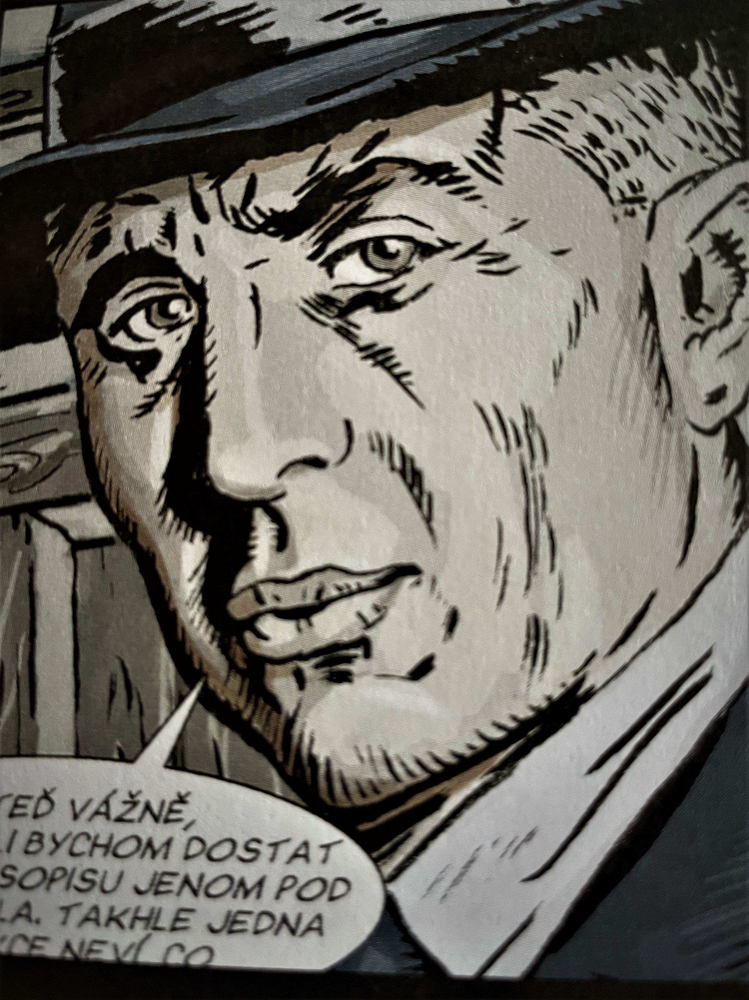
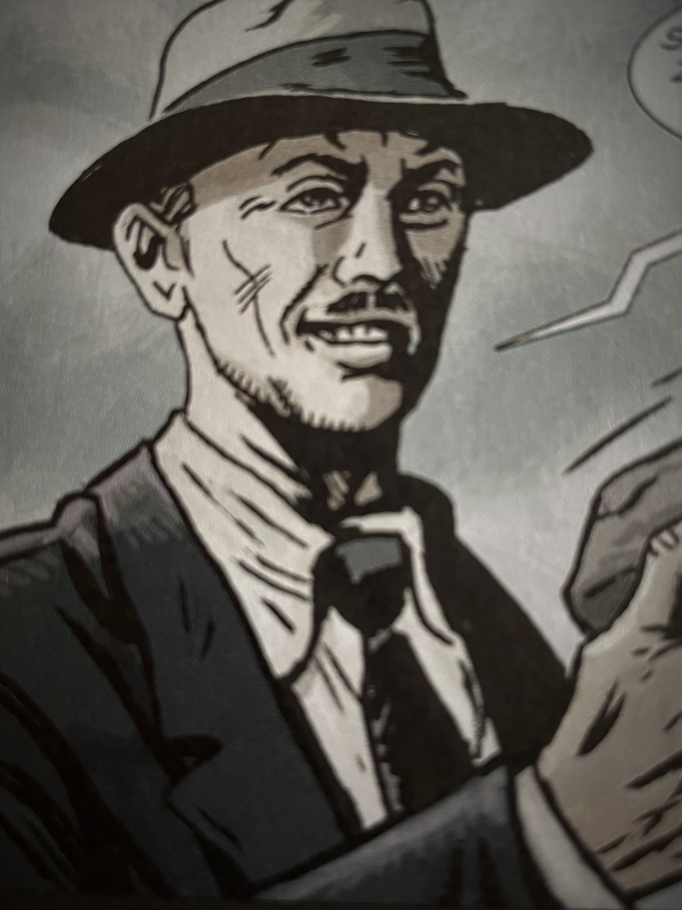
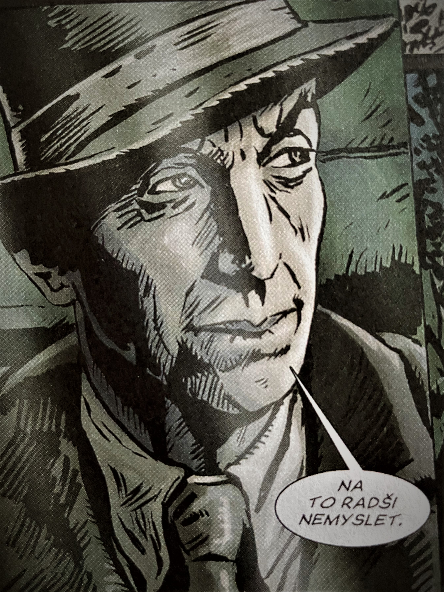

TŘI KRÁLOVÉ, HRDINOVÉ OBDOJE



Tři králové - členové českého protinacistického odboje Tento příběh se
odehrává v letech 1939 – 1942 za okupace. Kdy stovky odvážných
Čechoslováků tajně bojovali proti nenáviděnému fašizmu, který měl v
plánu zlikvidovat mnoho ostatních národů. Pojďte s námi po stopách
těch nejodvážnějších: Tří králů. Kdo byli Tři králové, německy Heilige
drei Könige. Tak je nazývalo gestapo. Byla to skupina Obrany národa
(ON), kterou tvořili pplk. Josef Balabán, pplk. Josef Mašín a št. kpt.
Václav Morávek. Skupina se zaměřovala na sběr zpravodajských
informací, přípravu, provádění sabotážních a diverzních akcí. Zároveň
se podílela na udržování spojení s československým exilem. Skupina se
začala formovat krátce po okupaci Čech a Moravy v roce 1939. S touto
skupinou dále spolupracoval radiotelegrafista četař František Peltán
(někdy označovaný jako čtvrtý ze Tří králů Hlavním úkolem byla
zpravodajská činnost. Získávali informace o německých transportech, o
pohybech zboží a poměrech v továrnách. Tyto informace vyhodnocovali a
tím získávali přehled o politickém a ekonomickém životě v
protektorátu. Tyto zprávy sestavoval Balabán. Ty byly potom do Londýna
odesílány jednak prostřednictvím vysílaček Sparta I. a potom i Sparta
II., a nebo větší přes prostředníky, kteří je transportovali přes
neutrální Švédsko nebo Jugoslávii. Nedílnou součástí Obrany bylo
získávání zbraní a výbušnin pro vlastní diverzní akce. Ještě před
obsazením republiky německou armádou se Mašínovi, když byl velitele
ruzyňské posádky, podařilo ukrýt zbraně. Další se mu dařilo získávat s
pomocí falešných dokladů z německé posádky nebo pašováním z
Jugoslávie. Jedna z nejpovedenějších akcí, na které se skupina
podílela, byly pumové útoky v Berlíně. Připravili a odzkoušeli nálože,
které Ctibor Novák, Mašínův švagr, dal 15.9.1939 přímo v Berlíně
umístil. První u policejního ředitelství a druhou u budovy
ministerstva letectví. Druhý útok byl pokus o zabití Himmlera, který
bohužel nevyšel. Nastražené nálože sice 30.12.1940 vybouchly v
Berlíně, tak jak měly, ale Himmlerův vlak měl zpoždění. Jiné útoky
byly proti vlakům, přepravující německé vojenské transporty zbraní a
jiného materiálu. Byla to sofistikovaně vymyšlená trhavina ve tvaru
briket, kterou přidávali do uhlí na tendrech lokomotiv. Tím co Gestapo
opravdu vytáčelo, až do krajních mezí, byly ovšem jejich takové
sabotážní perličky. Například když jim Morávkem pravidelně doručován
ilegální časopis V boj a to přímo na pražskou gestapárnu.